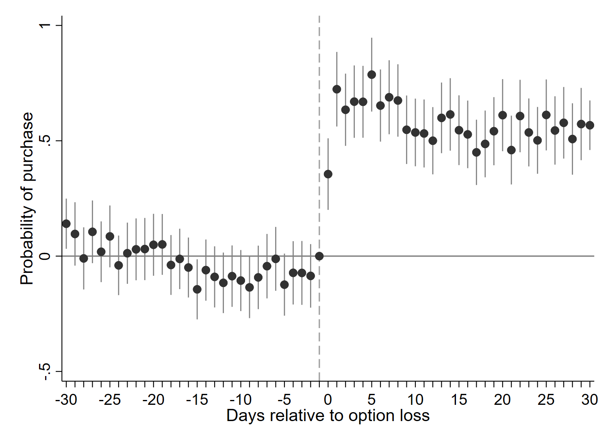

Research
Job Market Paper
Option Loss and Transaction Cascades in the Housing Market
with Ruiyu Zhu
In dynamic housing markets, a sale can affect not only the transacting parties, but also other buyers who had considered the property. We develop a dynamic sequential-search model in which property exit creates imperfect recall and signals tighter market conditions, generating transaction cascades.
Using data from a major Chinese housing platform, we exploit quasi-random sales of previously inspected properties as option-loss shocks. Option loss raises affected buyers' purchase probability by 67%, with stronger effects in tighter markets and among buyers with larger choice sets.
Presentation: Zurich-Oxford Doctoral Symposium 2026 (planned).

Working Papers
Borrowing Constraints and the Rise of the Private Rental Sector
with Jan Rouwendal and Florian Sniekers
This paper studies how tighter mortgage payment-to-income constraints affect tenure choice and the expansion of private rental housing. We develop an assignment model in which investors convert owner-occupied homes into rental homes for credit-constrained households, then apply the framework to Dutch mortgage-constraint contractions between 2012 and 2016.
Presented at UEA North American, UEA European, EEA-ESEM, IAAE, AREUEA International, Federal Reserve Bank of San Francisco, ReCapNet, Zurich-Bern Workshop, ESWC, and AREUEA-ASSA.
List Prices in Segmented Housing Markets
with Jan Rouwendal and Florian Sniekers
Using data from a large online housing platform in Beijing, this paper shows that list prices position listings into buyer segments. List-price revisions move listings across segments and change buyer flows, sale probabilities, time on market, and transaction prices.
Presented at UEA North American, Chinese Summer Meeting in Urban Economics, BVRN Workshop, UEA European, with planned presentations at EEA-ESEM and AREUEA-ASSA.
New Listings and Housing Market Congestion
with Jan Rouwendal
This paper examines stock-flow matching in housing markets by estimating how new listings affect existing properties. Micro-level evidence shows that new listings reduce buyer visits and sale probabilities for nearby existing listings, while having little effect on sellers' listing prices.
Presented at UEA European 2025 and AREUEA International Conference 2025.
Pre-doc Publication
The Causes and Consequences of China's Municipal Amalgamations: Evidence from Population Redistribution
Ning Jia and Huiyong Zhong. China & World Economy, 30, 174-200, 2021.
Research Experience
- Research Assistant for Ming Lu, 2018-2020.
- Research Assistant for Hans R.A. Koster, 2025-2026.
Presentations
- 2027AREUEA-ASSA Conference, Washington D.C. (planned).
- 2026AREUEA-ASSA Conference, Philadelphia; UEA European Meeting, Barcelona (presented by co-author); EEA-ESEM, Dublin (planned); Zurich-Oxford Doctoral Symposium (planned).
- 2025UEA European Meeting, Berlin; BVRN Workshop, Amsterdam; AREUEA International Conference, Barcelona; Zurich-Bern Real Estate Finance and Economics Workshop, Zurich; Econometric Society World Congress, Seoul.
- 2024UEA North American Meeting, Washington D.C.; UEA Summer School, Geneva; IAAE Annual Conference, Xiamen; ReCapNet Conference, Stockholm; Federal Reserve Bank of San Francisco.
- 2021CEA Forum (Online); CCER SI, Beijing; Seminar CUFE, Beijing.